CODING AGENTS AS PIXEL WORLD MODELS
traex/DeepSeek-V4.1-Flash · common50_0023
点击播放 · 原生 RGB 像素
逐轮保存的候选
回放视频、检查图与代码变化。
每份候选均可单独播放。实际图片检查记录在下方工具轨迹中。
候选 01播放与检查图
点击播放 · 原生 RGB 像素

展开代码变化
--- 上一保存版本
+++ 本次保存版本
@@ -0,0 +1,174 @@
+from pathlib import Path
+
+import cv2
+import numpy as np
+from PIL import Image
+
+import artifact_io
+
+
+CASE_DIR = Path(__file__).resolve().parent
+FRAME_COUNT = 20
+WIDTH = 256
+HEIGHT = 256
+FPS = 4
+
+
+def smoothstep(edge0, edge1, value):
+ value = np.clip((value - edge0) / (edge1 - edge0), 0.0, 1.0)
+ return value * value * (3.0 - 2.0 * value)
+
+
+def make_hand_mask():
+ """Conservative silhouette around the visible gloved hand and forearms."""
+ points = np.array(
+ [
+ (125, 105), (132, 104), (140, 109), (146, 119), (149, 130),
+ (157, 132), (168, 137), (176, 146), (176, 157), (168, 166),
+ (161, 177), (168, 187), (183, 196), (202, 204), (223, 216),
+ (244, 228), (256, 234), (256, 256), (92, 256), (96, 239),
+ (101, 220), (104, 203), (107, 187), (113, 171), (119, 158),
+ (119, 148), (115, 138), (116, 127), (119, 116),
+ ],
+ dtype=np.int32,
+ )
+ mask = np.zeros((HEIGHT, WIDTH), np.uint8)
+ cv2.fillPoly(mask, [points], 255)
+
+ # The lower-right sleeve is separated from the floor by a dark edge.
+ # Keep its uncertain lower edge tight so moving it cannot smear the floor.
+ lower = np.zeros_like(mask)
+ cv2.fillPoly(
+ lower,
+ [np.array([(160, 169), (183, 196), (256, 235), (256, 256), (92, 256),
+ (101, 218), (121, 163)], np.int32)],
+ 255,
+ )
+ mask = cv2.bitwise_and(mask, lower | np.where(
+ (np.indices(mask.shape)[0] < 169), 255, 0
+ ).astype(np.uint8))
+ return mask
+
+
+def warp_hand(image, mask, angle_deg, curl_deg, lift, pull, closure):
+ yy, xx = np.mgrid[0:HEIGHT, 0:WIDTH].astype(np.float32)
+
+ # Anchor at the wrist and let the glove move more than the forearm.
+ wrist_weight = 1.0 - smoothstep(158.0, 238.0, yy)
+ upper_weight = 1.0 - smoothstep(112.0, 171.0, yy)
+ dx = np.zeros_like(xx)
+ dy = np.zeros_like(yy)
+
+ pivot_x, pivot_y = 143.0, 166.0
+ theta = np.deg2rad(angle_deg) * wrist_weight
+ rx = xx - pivot_x
+ ry = yy - pivot_y
+ dx += (np.cos(theta) - 1.0) * rx - np.sin(theta) * ry
+ dy += np.sin(theta) * rx + (np.cos(theta) - 1.0) * ry
+
+ # A second, smaller rotation bends the gloved fingers around the spoke.
+ curl_x, curl_y = 141.0, 147.0
+ theta_curl = np.deg2rad(curl_deg) * upper_weight
+ cx = xx - curl_x
+ cy = yy - curl_y
+ dx += (np.cos(theta_curl) - 1.0) * cx - np.sin(theta_curl) * cy
+ dy += np.sin(theta_curl) * cx + (np.cos(theta_curl) - 1.0) * cy
+
+ dx += 0.8 * lift * upper_weight
+ dy -= lift * upper_weight
+ dy += pull * wrist_weight
+
+ # Pinch the fingertips slightly inward at the moment of contact.
+ contact_x, contact_y = 127.0, 111.0
+ pinch = np.exp(-(((xx - contact_x) / 20.0) ** 2 +
+ ((yy - contact_y) / 24.0) ** 2))
+ dx -= closure * 2.2 * pinch * (xx > contact_x)
+ dy -= closure * 1.1 * pinch
+
+ map_x = (xx - dx).astype(np.float32)
+ map_y = (yy - dy).astype(np.float32)
+ warped = cv2.remap(
+ image, map_x, map_y, interpolation=cv2.INTER_CUBIC,
+ borderMode=cv2.BORDER_REFLECT_101,
+ )
+ warped_mask = cv2.remap(
+ mask, map_x, map_y, interpolation=cv2.INTER_NEAREST,
+ borderMode=cv2.BORDER_CONSTANT, borderValue=0,
+ )
+ return warped, warped_mask
+
+
+def render_frame(base, clean, source_mask, t):
+ if t == 0:
+ return base.copy()
+
+ approach = smoothstep(0.04, 0.29, t)
+ settle = smoothstep(0.25, 0.42, t)
+ grip = smoothstep(0.16, 0.36, t)
+ pull = smoothstep(0.56, 0.76, t) * (1.0 - 0.25 * smoothstep(0.80, 1.0, t))
+
+ angle = -1.4 * approach + 0.65 * pull
+ curl = -8.5 * grip + 2.0 * pull
+ lift = 1.8 * approach
+ hand, target_mask = warp_hand(
+ base, source_mask, angle, curl, lift, pull * 2.4, grip
+ )
+
+ target_mask = cv2.GaussianBlur(target_mask, (3, 3), 0.55)
+ alpha = target_mask.astype(np.float32)[..., None] / 255.0
+ out = base.astype(np.float32) * (1.0 - alpha) + hand.astype(np.float32) * alpha
+
+ # Fill only the narrow strip exposed behind the moving glove.
+ old_only = (source_mask > 127) & (target_mask < 70)
+ old_only = cv2.dilate(old_only.astype(np.uint8), np.ones((3, 3), np.uint8)) > 0
+ if np.any(old_only):
+ out[old_only] = clean[old_only].astype(np.float32)
+
+ # Contact darkening and a warm edge highlight make the glove read as
+ # closing around the existing black spoke without changing its geometry.
+ overlay = out.copy()
+ cx, cy = 127.0, 111.0
+ yy, xx = np.indices((HEIGHT, WIDTH))
+ contact = np.exp(-(((xx - cx) / 4.0) ** 2 + ((yy - cy) / 9.0) ** 2))
+ contact *= grip
+ overlay[..., 0] *= 1.0 - 0.22 * contact
+ overlay[..., 1] *= 1.0 - 0.24 * contact
+ overlay[..., 2] *= 1.0 - 0.23 * contact
+
+ edge = np.exp(-(((xx - 121.0) / 1.8) ** 2 + ((yy - 117.0) / 12.0) ** 2))
+ edge *= grip * 0.25
+ overlay[..., 0] += 10.0 * edge
+ overlay[..., 1] += 8.0 * edge
+ overlay[..., 2] += 6.0 * edge
+
+ return np.clip(overlay, 0, 255).astype(np.uint8)
+
+
+def main():
+ base = np.asarray(Image.open(CASE_DIR / "first_frame.png").convert("RGB"))
+ source_mask = make_hand_mask()
+ clean = cv2.inpaint(
+ cv2.cvtColor(base, cv2.COLOR_RGB2BGR),
+ source_mask,
+ 3,
+ cv2.INPAINT_TELEA,
+ )
+ clean = cv2.cvtColor(clean, cv2.COLOR_BGR2RGB)
+
+ frames = np.empty((FRAME_COUNT, HEIGHT, WIDTH, 3), np.uint8)
+ for index in range(FRAME_COUNT):
+ t = index / (FRAME_COUNT - 1)
+ frames[index] = render_frame(base, clean, source_mask, t)
+ frames[0] = base
+
+ # Keep candidates inspectable in the workspace.
+ candidate_dir = CASE_DIR / ".tmp" / "candidate"
+ candidate_dir.mkdir(parents=True, exist_ok=True)
+ for index, frame in enumerate(frames):
+ Image.fromarray(frame).save(candidate_dir / f"{index:02d}.png")
+
+ artifact_io.save(frames, CASE_DIR)
+
+
+if __name__ == "__main__":
+ main()
候选 02播放与检查图
点击播放 · 原生 RGB 像素

展开代码变化
--- 上一保存版本
+++ 本次保存版本
@@ -50,6 +50,25 @@
return mask
+def make_finger_masks():
+ """Separate the thumb/index silhouette from the rest of the glove."""
+ thumb = np.zeros((HEIGHT, WIDTH), np.uint8)
+ cv2.fillPoly(
+ thumb,
+ [np.array([(121, 111), (129, 105), (137, 109), (142, 121),
+ (137, 131), (128, 130), (121, 121)], np.int32)],
+ 255,
+ )
+ index = np.zeros((HEIGHT, WIDTH), np.uint8)
+ cv2.fillPoly(
+ index,
+ [np.array([(137, 119), (146, 121), (153, 132), (149, 144),
+ (140, 144), (134, 133)], np.int32)],
+ 255,
+ )
+ return thumb, index
+
+
def warp_hand(image, mask, angle_deg, curl_deg, lift, pull, closure):
yy, xx = np.mgrid[0:HEIGHT, 0:WIDTH].astype(np.float32)
@@ -98,6 +117,64 @@
return warped, warped_mask
+def draw_grip_fingers(out, t, grip, pull):
+ """Draw small foreground glove surfaces over the spoke at contact."""
+ if grip <= 0.01:
+ return out
+
+ overlay = out.copy()
+ # Thumb surface curls from the left of the vertical spoke.
+ thumb_shift_x = -1.8 * grip + 0.8 * pull
+ thumb_shift_y = -0.8 * grip + 1.0 * pull
+ thumb_poly = np.array(
+ [(119, 111), (126, 106), (133, 108), (136, 115),
+ (133, 123), (125, 126), (119, 120)], np.float32
+ )
+ thumb_poly[:, 0] += thumb_shift_x
+ thumb_poly[:, 1] += thumb_shift_y
+
+ # Index surface comes down from the upper right and closes the ring.
+ idx_shift_x = 1.4 * grip - 0.7 * pull
+ idx_shift_y = -1.2 * grip + 0.9 * pull
+ index_poly = np.array(
+ [(136, 113), (143, 116), (146, 125), (143, 135),
+ (137, 136), (133, 127)], np.float32
+ )
+ index_poly[:, 0] += idx_shift_x
+ index_poly[:, 1] += idx_shift_y
+
+ alpha = np.zeros((HEIGHT, WIDTH), np.float32)
+ cv2.fillPoly(alpha, [np.round(thumb_poly).astype(np.int32)], float(grip))
+ cv2.fillPoly(alpha, [np.round(index_poly).astype(np.int32)], float(grip))
+ alpha = cv2.GaussianBlur(alpha, (3, 3), 0.55)[..., None]
+
+ # Glove colors sampled from the existing hand, with a dark crease between
+ # the two fingers and a narrow cool rim where they meet the spoke.
+ thumb_color = np.array([84, 85, 84], np.float32)
+ index_color = np.array([104, 103, 98], np.float32)
+ region_thumb = np.zeros((HEIGHT, WIDTH), np.uint8)
+ cv2.fillPoly(region_thumb, [np.round(thumb_poly).astype(np.int32)], 255)
+ thumb_color_map = np.broadcast_to(thumb_color, out.shape)
+ index_color_map = np.broadcast_to(index_color, out.shape)
+ fingers = thumb_color_map.copy()
+ fingers[region_thumb > 0] = index_color_map[region_thumb > 0]
+ overlay = overlay.astype(np.float32) * (1.0 - alpha) + fingers * alpha
+
+ yy, xx = np.indices((HEIGHT, WIDTH)).astype(np.float32)
+ crease = np.exp(-(((xx - 134.0) / 1.4) ** 2 +
+ ((yy - 120.0) / 7.0) ** 2))
+ crease *= grip
+ overlay[..., 0] *= 1.0 - 0.35 * crease
+ overlay[..., 1] *= 1.0 - 0.35 * crease
+ overlay[..., 2] *= 1.0 - 0.35 * crease
+
+ rim = np.exp(-(((xx - 133.0) / 1.1) ** 2 +
+ ((yy - 117.0) / 5.0) ** 2))
+ rim *= grip * 0.16
+ overlay += rim[..., None] * np.array([18.0, 17.0, 15.0])
+ return np.clip(overlay, 0, 255).astype(np.uint8)
+
+
def render_frame(base, clean, source_mask, t):
if t == 0:
return base.copy()
@@ -107,11 +184,11 @@
grip = smoothstep(0.16, 0.36, t)
pull = smoothstep(0.56, 0.76, t) * (1.0 - 0.25 * smoothstep(0.80, 1.0, t))
- angle = -1.4 * approach + 0.65 * pull
- curl = -8.5 * grip + 2.0 * pull
- lift = 1.8 * approach
+ angle = -2.2 * approach + 0.9 * pull
+ curl = -13.0 * grip + 2.8 * pull
+ lift = 2.5 * approach
hand, target_mask = warp_hand(
- base, source_mask, angle, curl, lift, pull * 2.4, grip
+ base, source_mask, angle, curl, lift, pull * 3.1, grip
)
target_mask = cv2.GaussianBlur(target_mask, (3, 3), 0.55)
@@ -141,7 +218,10 @@
overlay[..., 1] += 8.0 * edge
overlay[..., 2] += 6.0 * edge
- return np.clip(overlay, 0, 255).astype(np.uint8)
+ overlay = draw_grip_fingers(
+ np.clip(overlay, 0, 255).astype(np.uint8), t, grip, pull
+ )
+ return overlay
def main():
候选 03播放与检查图
点击播放 · 原生 RGB 像素

展开代码变化
--- 上一保存版本
+++ 本次保存版本
@@ -117,6 +117,26 @@
return warped, warped_mask
+def make_source_fill(base, mask):
+ """Borrow nearby real pixels instead of leaving a flat inpaint scar."""
+ clean = base.copy()
+ for row in range(HEIGHT):
+ valid = np.flatnonzero(mask[row] < 32)
+ if len(valid) == 0:
+ continue
+ missing = np.flatnonzero(mask[row] >= 32)
+ if len(missing) == 0:
+ continue
+ # Nearest unmasked source pixel on either side of the limb.
+ right = np.searchsorted(valid, missing)
+ left = np.clip(right - 1, 0, len(valid) - 1)
+ right = np.clip(right, 0, len(valid) - 1)
+ choose_right = np.abs(valid[right] - missing) < np.abs(valid[left] - missing)
+ src = np.where(choose_right, valid[right], valid[left])
+ clean[row, missing] = base[row, src]
+ return clean
+
+
def draw_grip_fingers(out, t, grip, pull):
"""Draw small foreground glove surfaces over the spoke at contact."""
if grip <= 0.01:
@@ -188,7 +208,7 @@
curl = -13.0 * grip + 2.8 * pull
lift = 2.5 * approach
hand, target_mask = warp_hand(
- base, source_mask, angle, curl, lift, pull * 3.1, grip
+ base, source_mask, angle, curl, lift, pull * 2.0, grip
)
target_mask = cv2.GaussianBlur(target_mask, (3, 3), 0.55)
@@ -197,7 +217,7 @@
# Fill only the narrow strip exposed behind the moving glove.
old_only = (source_mask > 127) & (target_mask < 70)
- old_only = cv2.dilate(old_only.astype(np.uint8), np.ones((3, 3), np.uint8)) > 0
+ old_only = cv2.dilate(old_only.astype(np.uint8), np.ones((2, 2), np.uint8)) > 0
if np.any(old_only):
out[old_only] = clean[old_only].astype(np.float32)
@@ -227,13 +247,7 @@
def main():
base = np.asarray(Image.open(CASE_DIR / "first_frame.png").convert("RGB"))
source_mask = make_hand_mask()
- clean = cv2.inpaint(
- cv2.cvtColor(base, cv2.COLOR_RGB2BGR),
- source_mask,
- 3,
- cv2.INPAINT_TELEA,
- )
- clean = cv2.cvtColor(clean, cv2.COLOR_BGR2RGB)
+ clean = make_source_fill(base, source_mask)
frames = np.empty((FRAME_COUNT, HEIGHT, WIDTH, 3), np.uint8)
for index in range(FRAME_COUNT):
候选 04播放与检查图
点击播放 · 原生 RGB 像素

展开代码变化
--- 上一保存版本
+++ 本次保存版本
@@ -202,13 +202,15 @@
approach = smoothstep(0.04, 0.29, t)
settle = smoothstep(0.25, 0.42, t)
grip = smoothstep(0.16, 0.36, t)
- pull = smoothstep(0.56, 0.76, t) * (1.0 - 0.25 * smoothstep(0.80, 1.0, t))
-
- angle = -2.2 * approach + 0.9 * pull
- curl = -13.0 * grip + 2.8 * pull
- lift = 2.5 * approach
+ pull = smoothstep(0.45, 0.67, t) * (1.0 - 0.38 * smoothstep(0.72, 1.0, t))
+ micro = np.sin(2.0 * np.pi * (t - 0.22) * 2.15) * smoothstep(0.20, 0.38, t)
+ micro *= 1.0 - smoothstep(0.86, 1.0, t)
+
+ angle = -2.2 * approach + 0.9 * pull + 0.28 * micro
+ curl = -13.0 * grip + 2.8 * pull - 0.9 * micro
+ lift = 2.5 * approach + 0.35 * micro
hand, target_mask = warp_hand(
- base, source_mask, angle, curl, lift, pull * 2.0, grip
+ base, source_mask, angle, curl, lift, pull * 2.0 + 0.25 * micro, grip
)
target_mask = cv2.GaussianBlur(target_mask, (3, 3), 0.55)
候选 05播放与检查图
可观测工具轨迹
实际执行的命令与返回图片。
命令 1exit 0
/bin/bash -c "pwd && rg --files -g 'prompt.txt' -g 'GENERATION_RULES.md' -g 'first_frame.png' -g '"'!**/.git/**'"'"
命令 2exit 0
/bin/bash -c "sed -n '1,240p' prompt.txt"
命令 3exit 0
/bin/bash -c "sed -n '1,280p' GENERATION_RULES.md"
命令 4exit 0
/bin/bash -c "ls -la && find . -maxdepth 2 -type f -printf '%p %s bytes\\n' | sort"
命令 5exit 0
/bin/bash -c 'cat task_spec.json'
命令 6exit 0
/bin/bash -c "sed -n '1,260p' artifact_io.py"
命令 7exit 0
/bin/bash -c "sed -n '1,240p' player_template.html"
命令 8exit 0
/bin/bash -c "python - <<'PY'
from PIL import Image
im=Image.open('first_frame.png')
print(im.mode, im.size)
for name, box in {
'center':(55,75,220,205),
'hand':(90,90,185,190),
'wheel':(0,140,220,256),
'full2x':(0,0,256,256),
}.items():
crop=im.crop(box)
crop.resize((crop.width*4,crop.height*4), Image.Resampling.NEAREST).save(f'.tmp/{name}.png')
PY"命令 9exit 0
/bin/bash -c "python - <<'PY' mods=['numpy','PIL','cv2','scipy','skimage'] for m in mods: try: x=__import__(m); print(m, getattr(x,'__version__','ok')) except Exception as e: print(m,'NO',e) PY"
命令 10exit 0
/bin/bash -c "python - <<'PY'
from PIL import Image, ImageDraw
im=Image.open('first_frame.png').resize((768,768), Image.Resampling.NEAREST)
d=ImageDraw.Draw(im)
for x in range(0,257,10):
X=x*3
d.line((X,0,X,768), fill=(255,0,0,70), width=1)
d.text((X+1,2),str(x),fill=(255,255,0))
for y in range(0,257,10):
Y=y*3
d.line((0,Y,768,Y), fill=(255,0,0,70), width=1)
d.text((2,Y+1),str(y),fill=(255,255,0))
im.save('.tmp/grid.png')
PY"命令 11exit 0
/bin/bash -c "python - <<'PY'
from PIL import Image
im=Image.open('first_frame.png')
# print rough palette summaries and edge map
import numpy as np
from scipy.ndimage import gaussian_filter
x=np.asarray(im).astype(float)
g=gaussian_filter(x.mean(2),1)
gx=np.abs(np.diff(g,axis=1)); gy=np.abs(np.diff(g,axis=0))
e=np.zeros_like(g); e[:,1:]+=gx; e[1:,:]+=gy
e=(e/e.max()*255).clip(0,255).astype('uint8')
Image.fromarray(e).resize((768,768)).save('.tmp/edges.png')
PY"命令 12exit 0
/bin/bash -c "python - <<'PY'
import cv2, numpy as np
im=cv2.imread('first_frame.png')
g=cv2.cvtColor(im,cv2.COLOR_BGR2GRAY)
# wheel circles
circles=cv2.HoughCircles(g,cv2.HOUGH_GRADIENT,dp=1,minDist=50,param1=80,param2=20,minRadius=60,maxRadius=180)
print(circles)
# line segments
ed=cv2.Canny(g,50,120)
lines=cv2.HoughLinesP(ed,1,np.pi/180,threshold=20,minLineLength=15,maxLineGap=5)
print('lines',len(lines))
for l in sorted(lines[:,0].tolist(), key=lambda z:-((z[2]-z[0])**2+(z[3]-z[1])**2))[:30]: print(l)
PY"命令 13exit 0
/bin/bash -c "python - <<'PY'
from PIL import Image
im=Image.open('first_frame.png')
box=(85,100,195,225)
for method,name in [(Image.Resampling.NEAREST,'hand_nearest'),(Image.Resampling.LANCZOS,'hand_lanczos')]:
c=im.crop(box); c.resize((660,750),method).save(f'.tmp/{name}.png')
PY"命令 14exit 0
/bin/bash -c 'python generate.py'
命令 15exit 0
/bin/bash -c "python - <<'PY'
from PIL import Image, ImageChops
import numpy as np
base=np.asarray(Image.open('first_frame.png')).astype(int)
for i in [1,3,5,7,10,12,15,19]:
a=np.asarray(Image.open(f'frames/{i:02d}.png')).astype(int)
d=np.abs(a-base).max(2)
print(i, 'changed', (d>4).sum(), 'mean', np.abs(a-base).mean(), 'bbox', Image.fromarray((d>4).astype('uint8')*255).getbbox())
PY"命令 16exit 0
/bin/bash -c "python - <<'PY'
from PIL import Image, ImageEnhance, ImageFilter
im=Image.open('first_frame.png')
for f in [1.8,2.8]:
out=ImageEnhance.Brightness(im).enhance(f)
out=ImageEnhance.Contrast(out).enhance(1.3)
out.resize((1024,1024),Image.Resampling.LANCZOS).save(f'.tmp/bright{f}.png')
# crop original with hand and wheel, high res
im.crop((0,70,256,256)).resize((1024,744),Image.Resampling.LANCZOS).save('.tmp/lower.png')
PY"命令 17exit 0
/bin/bash -c "python - <<'PY'
import generate, cv2, numpy as np
from PIL import Image
im=np.asarray(Image.open('first_frame.png')).copy()
m=generate.make_hand_mask()
out=im.copy(); out[m>0]=(0.55*out[m>0]+0.45*np.array([255,40,20])).astype('uint8')
Image.fromarray(out).resize((768,768),Image.Resampling.NEAREST).save('.tmp/mask_overlay.png')
PY"命令 18exit 0
/bin/bash -c "python - <<'PY'
from PIL import Image
import numpy as np
im=np.asarray(Image.open('first_frame.png'))
# save hand crop enlarged with all channels enhanced
c=im[90:230,95:250]
for gamma in [0.55,0.4,0.3]:
a=(np.clip((c/255.)**gamma,0,1)*255).astype('uint8')
Image.fromarray(a).resize((930,840),Image.Resampling.NEAREST).save(f'.tmp/gamma{gamma}.png')
PY"命令 19exit 0
/bin/bash -c 'python generate.py'
命令 20exit 0
/bin/bash -c "python - <<'PY'
from PIL import Image
for i in [0,4,8,12,16,19]:
im=Image.open(f'frames/{i:02d}.png').crop((90,90,205,215))
im.resize((460,500),Image.Resampling.NEAREST).save(f'.tmp/hand{i:02d}.png')
PY"命令 21exit 0
/bin/bash -c "python - <<'PY'
from PIL import Image
ims=[Image.open(f'.tmp/hand{i:02d}.png') for i in [0,4,8,12,16,19]]
out=Image.new('RGB',(460*3,500*2))
for j,im in enumerate(ims): out.paste(im,((j%3)*460,(j//3)*500))
out.save('.tmp/hand_strip.png')
PY"命令 22exit 0
/bin/bash -c 'python generate.py'
命令 23exit 0
/bin/bash -c "python - <<'PY'
from PIL import Image
import numpy as np
ims=[Image.open(f'frames/{i:02d}.png') for i in [0,4,8,12,16,19]]
out=Image.new('RGB',(512*3,512*2))
for j,im in enumerate(ims): out.paste(im.resize((512,512),Image.Resampling.NEAREST),((j%3)*512,(j//3)*512))
out.save('.tmp/frame_strip.png')
# seam diff old source vs final around hand
base=np.asarray(Image.open('first_frame.png')).astype(int)
for i in [5,8,12,16,19]:
a=np.asarray(Image.open(f'frames/{i:02d}.png')).astype(int)
d=np.abs(a-base).max(2)
print(i,(d>4).sum(),np.abs(a-base).mean())
PY"命令 24exit 0
/bin/bash -c "python - <<'PY'
from PIL import Image
import numpy as np
base=np.asarray(Image.open('first_frame.png')).astype(int)
for i in [5,8,12,16,19]:
a=np.asarray(Image.open(f'frames/{i:02d}.png')).astype(int)
d=np.abs(a-base).max(2)
# differences outside intended hand area
outside=d.copy(); outside[95:230,95:205]=0
print(i,'outside', (outside>8).sum(), 'max',outside.max())
ys,xs=np.where(outside>8)
if len(xs): print(' bbox',xs.min(),ys.min(),xs.max(),ys.max())
PY"命令 25exit 0
/bin/bash -c "python - <<'PY'
from PIL import Image
import numpy as np
for i in [0,5,8,12,16,19]:
im=Image.open(f'frames/{i:02d}.png').crop((95,90,205,225))
a=np.asarray(im).astype(float)
a=np.clip((a/255.)**0.65*255,0,255).astype('uint8')
Image.fromarray(a).resize((440,540),Image.Resampling.NEAREST).save(f'.tmp/detail{i:02d}.png')
ims=[Image.open(f'.tmp/detail{i:02d}.png') for i in [0,5,8,12,16,19]]
out=Image.new('RGB',(1320,1080))
for j,im in enumerate(ims): out.paste(im,((j%3)*440,(j//3)*540))
out.save('.tmp/detail_strip.png')
PY"命令 26exit 0
/bin/bash -c "python - <<'PY'
from PIL import Image
import numpy as np
base=np.asarray(Image.open('first_frame.png')).astype(float)
# Show per-frame mean absolute changes in central hand crop and lower edge
for i in range(20):
a=np.asarray(Image.open(f'frames/{i:02d}.png')).astype(float)
d=np.abs(a-base)
print(f'{i:02d}',f'{d[95:225,95:205].mean():.3f}',f'{d[190:240,90:210].mean():.3f}')
PY"命令 27exit 0
/bin/bash -c "python generate.py && python - <<'PY'
from PIL import Image
import numpy as np
base=np.asarray(Image.open('first_frame.png')).astype(float)
prev=base
for i in range(20):
a=np.asarray(Image.open(f'frames/{i:02d}.png')).astype(float)
d=np.abs(a-base); delta=np.abs(a-prev)
print(f'{i:02d} base {d[95:225,95:205].mean():.3f} frame {delta[90:230,90:210].mean():.3f}')
prev=a
PY"命令 28exit 0
/bin/bash -c "python - <<'PY'
from PIL import Image, ImageDraw
frames=[Image.open(f'frames/{i:02d}.png').crop((80,80,210,235)).resize((260,310),Image.Resampling.NEAREST) for i in range(20)]
out=Image.new('RGB',(260*5, (310+18)*4),(25,28,35)); d=ImageDraw.Draw(out)
for i,im in enumerate(frames):
x=(i%5)*260; y=(i//5)*328
d.text((x+4,y+2),f'{i:02d}',fill='white')
out.paste(im,(x,y+18))
out.save('.tmp/all_frames.png')
PY"命令 29exit 0
/bin/bash -c "python -m py_compile generate.py && python - <<'PY'
import json, numpy as np
from pathlib import Path
from PIL import Image
spec=json.loads(Path('task_spec.json').read_text())
z=np.load('pixels.npz')['pixels']
print('pixels',z.shape,z.dtype,'range',z.min(),z.max())
print('frame files',len(list(Path('frames').glob('*.png'))))
base=np.asarray(Image.open('first_frame.png'))
f0=np.asarray(Image.open('frames/00.png'))
print('frame00 exact',np.array_equal(base,f0))
print('index bytes',Path('index.html').stat().st_size)
print('changed frames',sum(not np.array_equal(np.asarray(Image.open(f'frames/{i:02d}.png')),base) for i in range(1,20)))
PY"命令 30exit 0
/bin/bash -c "which chromium || which chromium-browser || which google-chrome || true; which node || true; python - <<'PY'
try:
import playwright; print('playwright yes')
except Exception as e: print('playwright no')
PY"命令 31exit 1
/bin/bash -c "python - <<'PY'
from playwright.sync_api import sync_playwright
from pathlib import Path
url=(Path('index.html').resolve()).as_uri()
with sync_playwright() as p:
b=p.chromium.launch(headless=True)
page=b.new_page(viewport={'width':900,'height':700})
page.goto(url)
page.wait_for_function('window.__pixelReady === true')
print('ready',page.evaluate('window.__pixelReady'), 'canvas',page.locator('canvas').bounding_box())
print('caption',page.locator('#caption').inner_text())
page.locator('#seek').fill('19')
page.locator('#seek').dispatch_event('input')
print('time',page.locator('#time').inner_text())
page.screenshot(path='.tmp/player.png',full_page=True)
b.close()
PY"命令 32exit 1
/bin/bash -c 'mkdir -p .tmp/pw && TMPDIR="$PWD/.tmp/pw" python - <<'"'PY'
from playwright.sync_api import sync_playwright
from pathlib import Path
url=(Path('index.html').resolve()).as_uri()
with sync_playwright() as p:
b=p.chromium.launch(headless=True)
page=b.new_page(viewport={'width':900,'height':700})
page.goto(url)
page.wait_for_function('window.__pixelReady === true')
print('ready',page.evaluate('window.__pixelReady'), 'canvas',page.locator('canvas').bounding_box())
print('caption',page.locator('#caption').inner_text())
page.locator('#seek').fill('19')
page.locator('#seek').dispatch_event('input')
print('time',page.locator('#time').inner_text())
page.screenshot(path='.tmp/player.png',full_page=True)
b.close()
PY"视觉工具实际返回图片 1
视觉工具实际返回图片 2
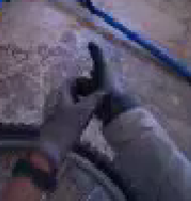
视觉工具实际返回图片 3
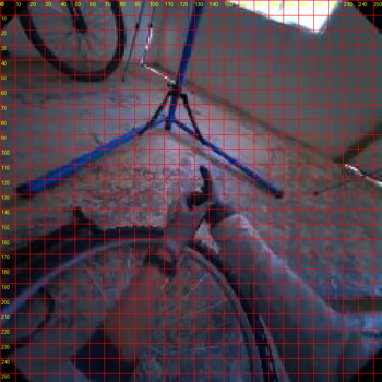
视觉工具实际返回图片 4
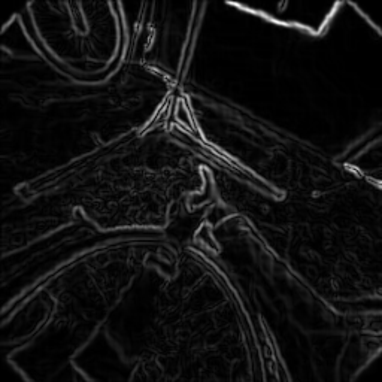
视觉工具实际返回图片 5
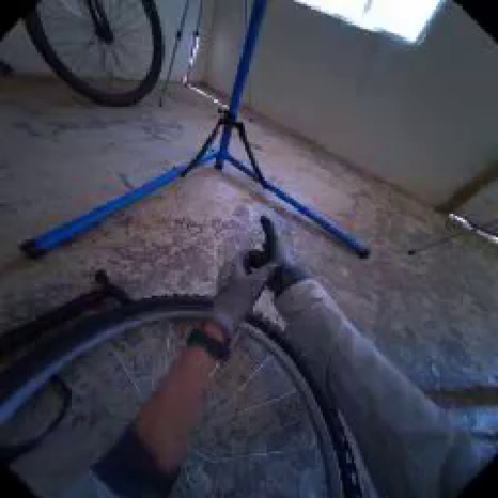
视觉工具实际返回图片 6
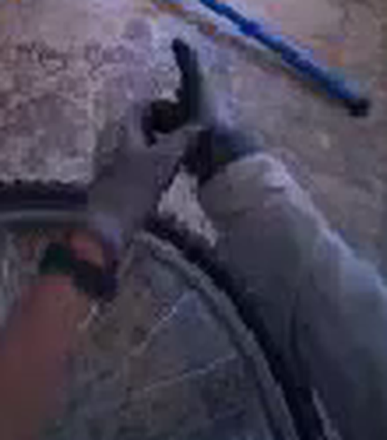
视觉工具实际返回图片 7
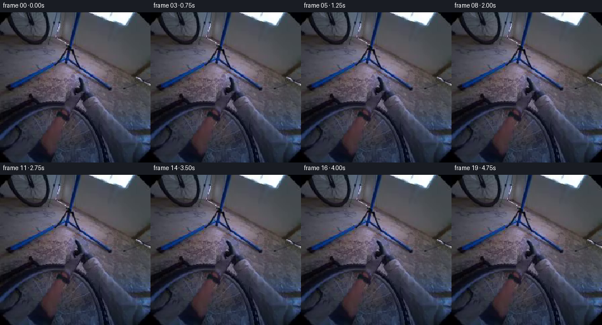
视觉工具实际返回图片 8
视觉工具实际返回图片 9
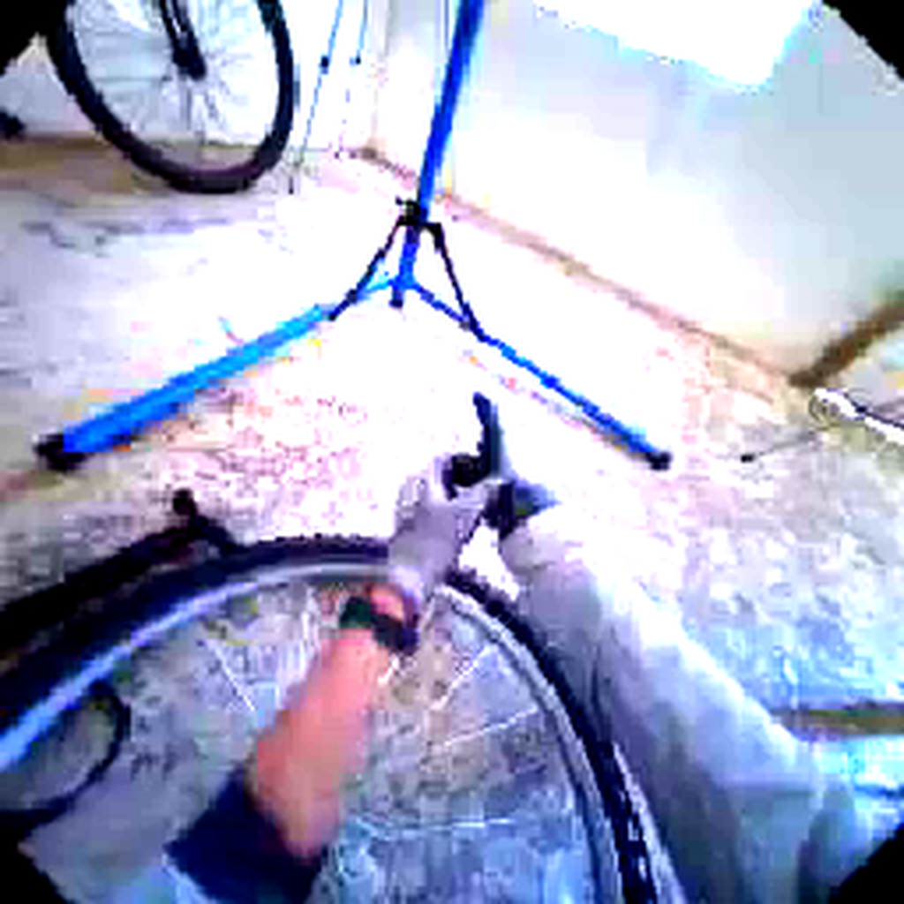
视觉工具实际返回图片 10
视觉工具实际返回图片 11
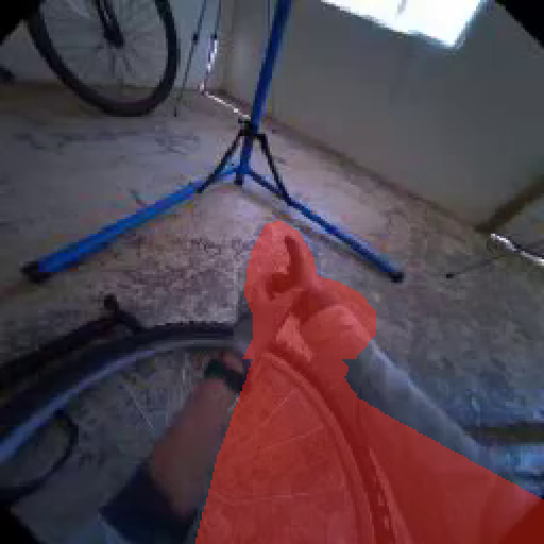
视觉工具实际返回图片 12
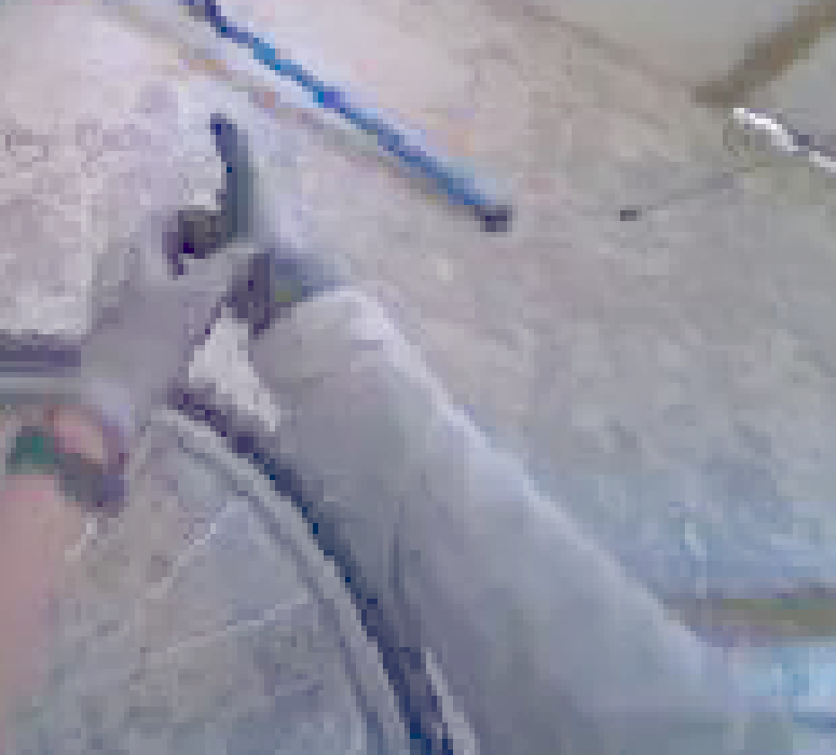
视觉工具实际返回图片 13
视觉工具实际返回图片 14
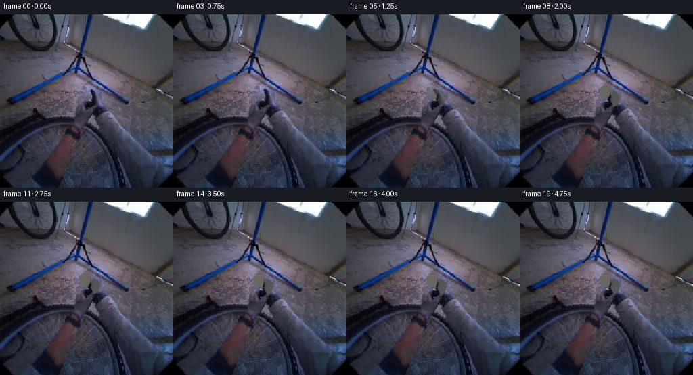
视觉工具实际返回图片 15
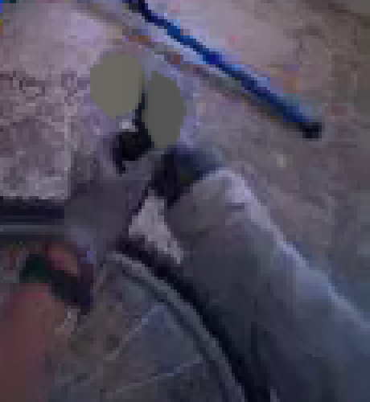
视觉工具实际返回图片 16
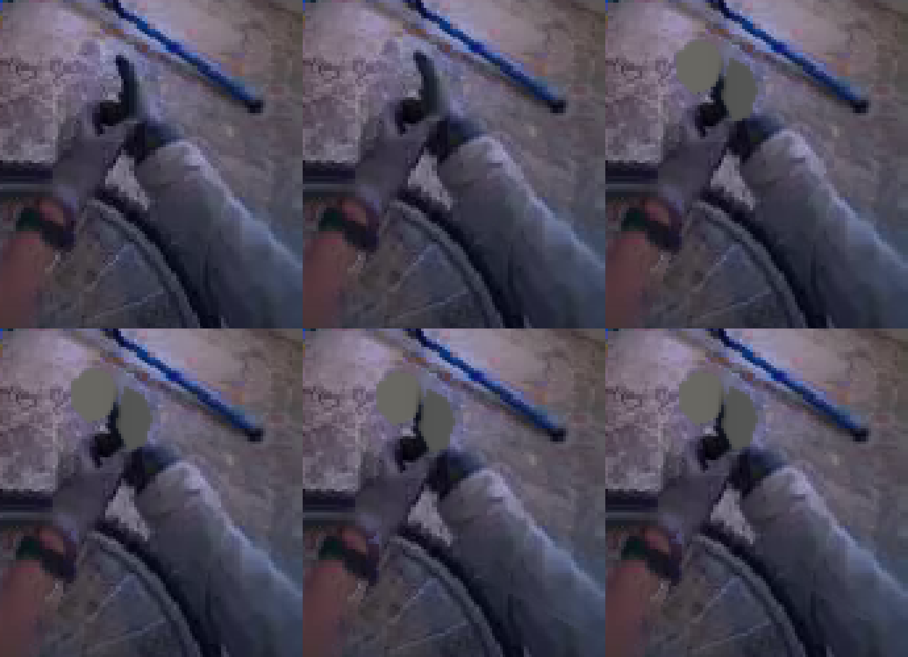
视觉工具实际返回图片 17
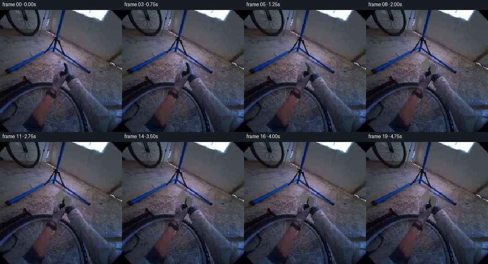
视觉工具实际返回图片 18
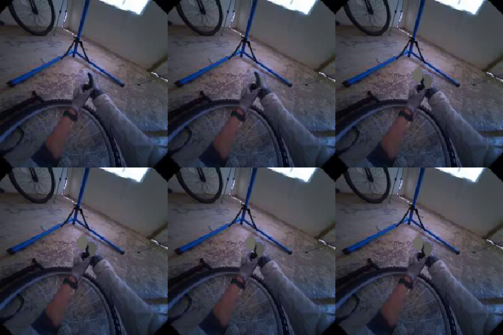
视觉工具实际返回图片 19
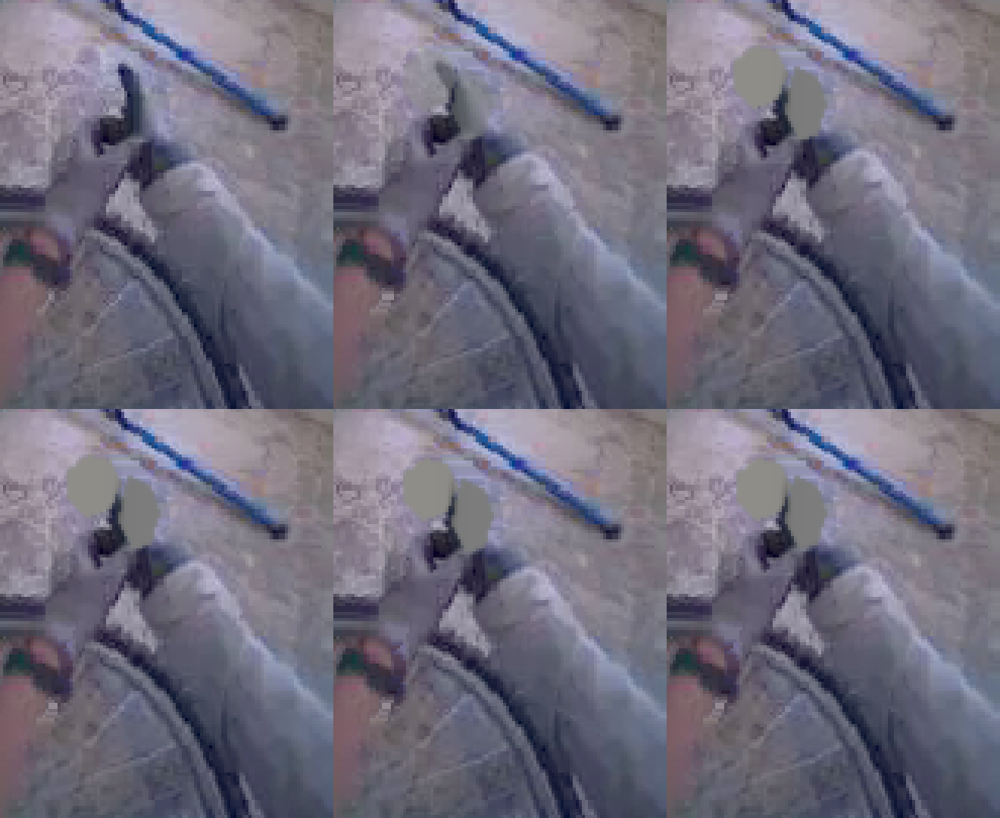
视觉工具实际返回图片 20

视觉工具实际返回图片 21
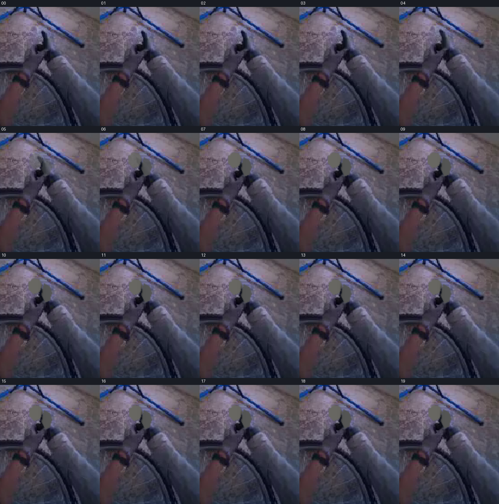
保存候选 5 份；完成命令 32 次；可验证图片返回 21 张。原始 API 响应与完整日志保留在本地。